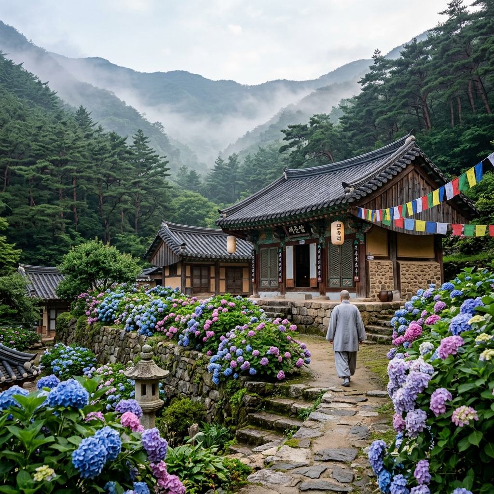
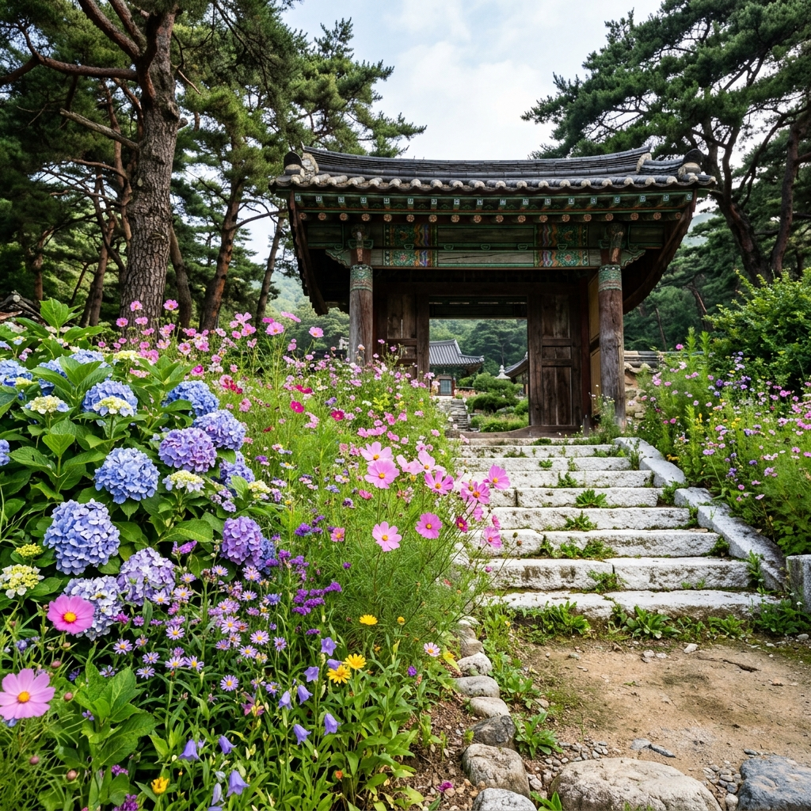
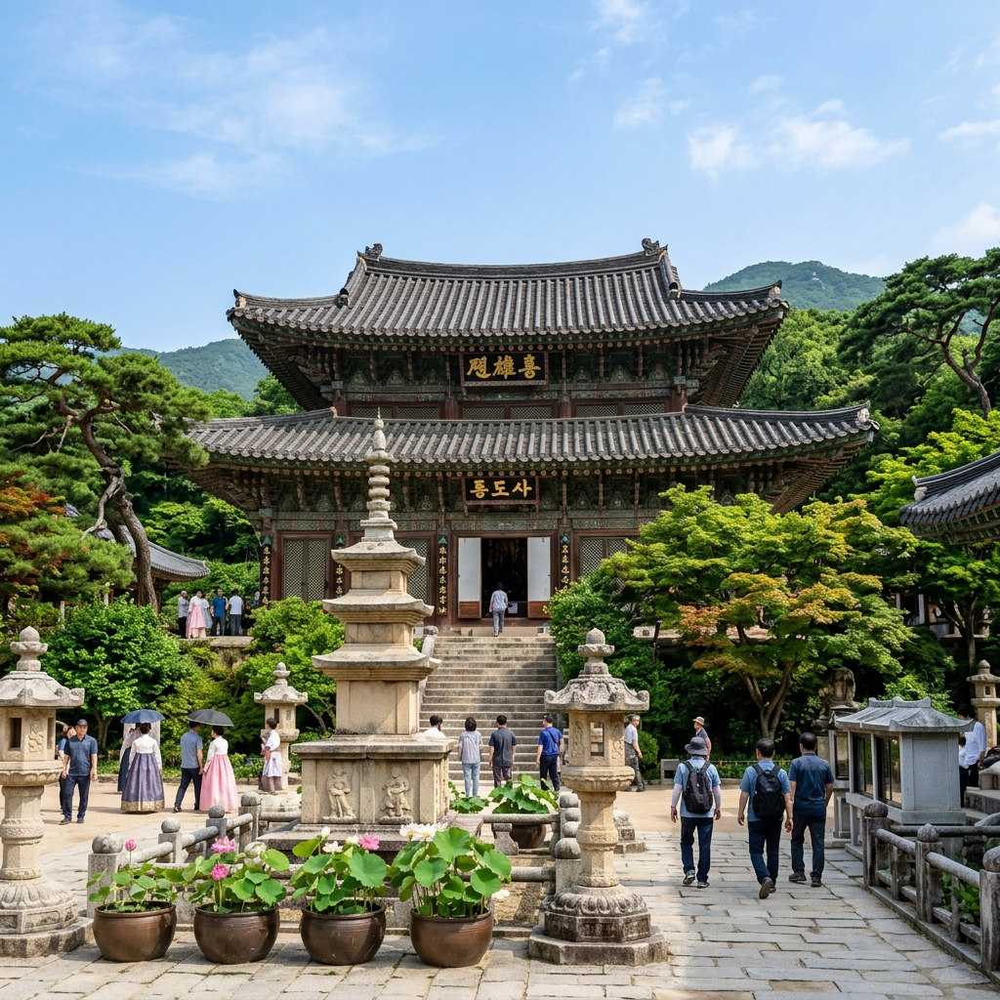

통도사는 규모가 큰 사찰입니다. 경내 19개 암자가 영축산 자락 곳곳에 흩어져 있는데, 그중 서운암은 통도사 안쪽에서도 가장 깊숙한 곳에 있는 작은 암자입니다.
규모로 승부하는 곳이 아닙니다. 4월부터 초여름까지 작약, 할미꽃, 돌단풍 같은 야생화가 연달아 피어나는 덕분에 사찰 꽃 여행지로 입소문이 퍼졌습니다.
6월이 되면 수국이 그 자리를 이어받습니다. 법당 앞뜰, 담장 옆, 소나무숲 초입까지 수국이 넓게 펼쳐집니다.
이 곳의 수국은 화단에 반듯하게 심은 것과 다릅니다. 오랜 세월 자리를 잡아 온 자연 발아에 가까운 군락이어서, 사찰 특유의 고요한 분위기와 어울려 독특한 정서를 만들어 냅니다.
이른 아침 범종 소리와 함께 안개 속 수국을 보는 것이 서운암 방문의 가장 인상적인 장면으로 꼽힙니다.

서운암은 해발 300~400m에 위치해 해안가보다 수국 개화가 1주일 정도 늦습니다.
대체로 6월 중순~하순이 가장 풍성한 시기입니다. 이 시기를 기준으로 삼고 방문 전 통도사 공식 SNS나 사찰 측에 개화 현황을 문의하면 가장 정확합니다.
6월 중순 주말 방문 시 절정을 맞출 확률이 가장 높습니다. 비가 온 다음 날 방문하면 수국 색이 더 선명하고 꽃잎에 물방울이 맺혀 촬영 조건도 좋아집니다.
통도사 입구에서 서운암까지 걸어가는 것 자체가 훌륭한 트레킹입니다.
주차장에서 일주문을 지나면 솔밭길(약 700m)이 시작됩니다. 수백 년 된 소나무들이 줄지어 서 있는 이 길은 통도사 방문의 하이라이트 중 하나입니다. 햇빛이 솔잎 사이로 부서지는 여름 아침의 솔밭길은 어느 사진보다 아름답습니다.
대웅전을 지나 안쪽으로 계속 올라가면 암자 방향 이정표가 나타납니다. 서운암까지는 추가로 약 1~1.5km를 더 걸어야 합니다. 25~30분이면 도착합니다.
비포장 구간이 일부 있지만 전반적으로 잘 정비되어 있어 운동화로 충분합니다. 영축산 정상까지 가려면 서운암에서 추가 2~3시간이 소요됩니다.
서운암 경내에서 사진이 잘 나오는 네 군데를 소개합니다.
첫 번째, 암자 입구 돌계단 양쪽입니다. 수국이 좌우로 늘어선 이 계단이 서운암 대표 포토존입니다. 오전 빛이 비스듬히 들어올 때 가장 아름답습니다.
두 번째, 경내 왼쪽 흰 담장 구간입니다. 하얀 담장과 파란 수국의 대비가 선명해서 단순하지만 강렬한 구도의 사진이 나옵니다.
세 번째, 법당 목조 기둥 옆입니다. 오래된 나무 기둥과 수국을 함께 담으면 전통 건축과 자연이 어우러진 사진이 완성됩니다.
네 번째, 뒤편 소나무숲 초입입니다. 소나무 가지 사이로 빛이 스며들면서 수국 군락이 환하게 빛나는 순간이 있습니다. 이 장면은 오전 9~10시에 가장 잘 연출됩니다.
사진 촬영 시 법당 내부와 수행 공간은 촬영을 삼가 주세요. 스님이 계신 공간에 무단 진입도 금지입니다.

서운암에서 영축산(1,059m) 정상까지는 본격적인 산행입니다. 왕복 5~6시간이 소요되므로 체력이 충분한 분들에게만 권합니다.
그러나 서운암에서 정상까지 가지 않더라도, 서운암~영축산 1코스 초반 구간(약 1.5km)만 걸어도 6월 신록의 절정을 경험할 수 있습니다.
통도사 계곡길은 초여름에 수량이 풍부하고 물이 맑습니다. 발을 담글 수 있는 소소한 즐거움도 있고, 계곡 옆 숲길은 그늘이 짙어 더운 날씨에도 비교적 쾌적하게 걸을 수 있습니다.
영축산 정상을 목표로 한다면 아침 7시 이전 출발이 필수입니다. 정오 이후 기온이 급격히 올라가는 시기이므로 준비 없이 늦게 출발하면 고생할 수 있습니다.
서운암으로 가는 길에 통도사 본당인 대웅전을 꼭 들러 보세요.
통도사는 신라 선덕여왕 15년(646년) 자장율사가 창건한 천년 고찰입니다. 석가모니 부처님의 진신사리를 봉안한 불보종찰로서, 대웅전 안에 불상이 없는 것으로 유명합니다.
국보로 지정된 대웅전은 조선 후기 목조 건축의 걸작입니다. 지붕 형태가 하나의 건물 안에 여러 구조를 담아내는 독특한 방식으로 지어졌습니다.
경내 성보박물관에서는 통도사와 관련된 불교 문화재를 관람할 수 있습니다. 운영 일정은 현장에서 확인하세요.
통도사 입구 마을에는 산채 비빔밥 전문 식당들이 모여 있습니다.
영축산에서 채취한 나물을 넣은 산채 비빔밥은 이 지역에서만 맛볼 수 있는 별미입니다. 사찰 음식의 담백함과 봄 나물의 향이 더해져 기름기 없이 깔끔한 맛입니다. 가격도 합리적인 편입니다.
더운 여름 초입에는 통도사 계곡물을 이용한 냉면이나 국수 한 그릇도 좋습니다. 통도사 입구 일대에 다양한 선택지가 있습니다.
양산 시내 방향으로 나오면 아구찜·곱창 등 경남식 먹거리를 저녁 식사로 즐길 수 있습니다.
통도사 입장료는 어른 기준 약 3,000원 수준입니다(실제 요금은 방문 전 확인 필수). 주차장은 경내에 대형 유료 주차장이 운영됩니다.
대중교통 이용 시 양산역(KTX 정차)에서 통도사 방면 버스를 탑승하거나, 부산 노포동터미널에서 직행버스를 이용합니다.
운영 시간은 계절별로 달라지니 공식 홈페이지(tongdosa.or.kr)에서 확인하세요.
수국 절정기 주말에는 통도사 주차장도 이른 시간에 차거나 진입이 지연되는 경우가 있습니다. 오전 9시 이전 도착 또는 대중교통 이용을 권장합니다.

서운암은 현재도 스님들이 수행하는 살아 있는 공간입니다.
이른 아침 예불 시간(오전 4~5시)과 저녁 예불 시간에는 경내 방문을 삼가는 것이 예의입니다.
수국 꽃잎을 꺾거나 군락 안으로 발을 들이밀어 촬영하는 행위는 사찰과 자연 모두에 대한 무례입니다. 반드시 길 위에서 촬영해 주세요.
반려동물 동반은 통도사 측 규정을 현장에서 확인하세요. 법당 내부는 신발을 벗고 들어가야 합니다.
드론 촬영은 사찰 측 허가가 필요합니다. 무단 드론 비행은 삼가 주세요.
수국 명소라고 하면 제주도나 남해 해안을 먼저 떠올리지만, 양산 서운암은 전혀 다른 결의 수국 경험을 제공합니다.
꽃을 보는 공간이 사찰이라는 점, 사찰로 걸어가는 솔밭길 자체가 여행의 일부라는 점, 수국 이후 대웅전과 문화재를 돌아보며 한국 불교의 깊이까지 느낄 수 있다는 점이 이 여행지의 독보적 강점입니다.
부산·울산에서 1시간 이내, 밀양이나 창원에서도 어렵지 않게 당일로 다녀올 수 있습니다. 6월 영남권 수국 여행의 첫 선택지로 양산 통도사 서운암을 추천합니다.